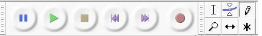

2. Herramientas de Selección y control

Las herramientas de selección y control incluyen la de selección, la envolvente, la herramienta dibujo, el zoom, el desplazamiento y la multiherramienta. Adicionalmente disponen de las herramientas de control (reproducir, parar, grabar, etc.)
La herramienta de selección nos permite seleccionar una parte de la pista a la que podemos realizar diversos procesos de edición (cortar, aplicar efectos, desplazar, entre otros). Siempre que deseemos actuar sobre una zona concreta debemos seleccionar previamente.
La herramienta envolvente tiene como finalidad ayudar a mejorar la calidad de los sotenidos permitendo asi, la simulacion más adecuada. En otras palabras, nos permite ampliar o disminuir a nuestro gusto el volumen y la intensidad del mismo. Para realizarlo debemos seleccionar los diversos nodos (mostrados en la imagen como círculos) para subir o bajar, aumentar o disminuir. Las líneas azules enmarcan el volumen de sonido. Se trata de desplazar la línea superior hacia abajo y la inferior hacia arriba. Ambas se mueven a la vez.
Ello nos permite realizar los fade-in y fade-out, es decir, subir y bajar el volumen de una pista para, por ejemplo, realizar una mezcla con otro sonido o coun una voz (karaoke).
La herramienta de Dibujo nos permite modificar los sonidos punto a punto. Para realizar el proceso debemos, previamente, seleccionar una pequeña selección (a), utilizar la herramienta zoom (b) y proceder a modificar con la herramienta de dibujo. Debemos saber que modificamos una nota en un espacio muy corto de tiempo.
Observa las pistas, una vez modificada alguna de los nodos o puntos. El sonido, en ese punto, será diferente al que disponías anteriormente. Este tipo de aplicación es para personas con alto nivel de audición o conocimientos musicales.
En caso de no usar el zoom de forma correcta o realizado poco zoom, el sistema nos indica el mensaje que no estamos lo suficientemente cerca y debemos aumentar el zoom para poder ver los muestreos individuales.
Herramienta de Traslado de Tiempo: Esta herramienta nos permite mover hacia adelante o atrás la pista seleccionada. Es muy válida para desplazar una pista y, al añadir una nueva, agregar otra pista al comienzo para realizar mezclas.
Herramienta Multiherramienta: permite el acceso a cualquiera de las otras herramientas de edición en función de la posición o lugar en el que este el cursor. Esta herramienta te permite seleccionar, envolver o desplazar.
Jo.R.C.A. 2004 - 2011

Edición de Audio y Video con Software Libre by José Ramón Cerdeira Alonso is licensed under a Creative Commons Reconocimiento-No comercial-Compartir bajo la misma licencia 3.0 España License